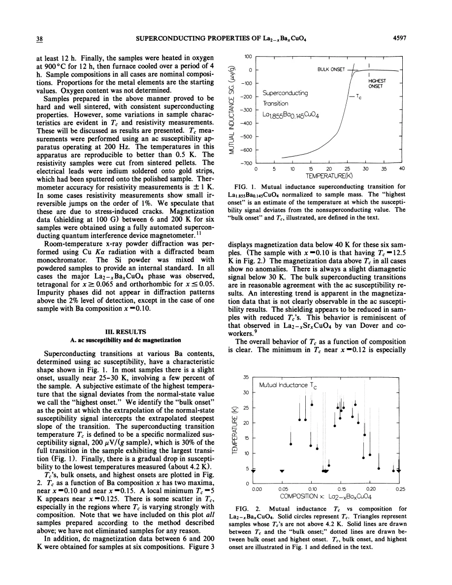
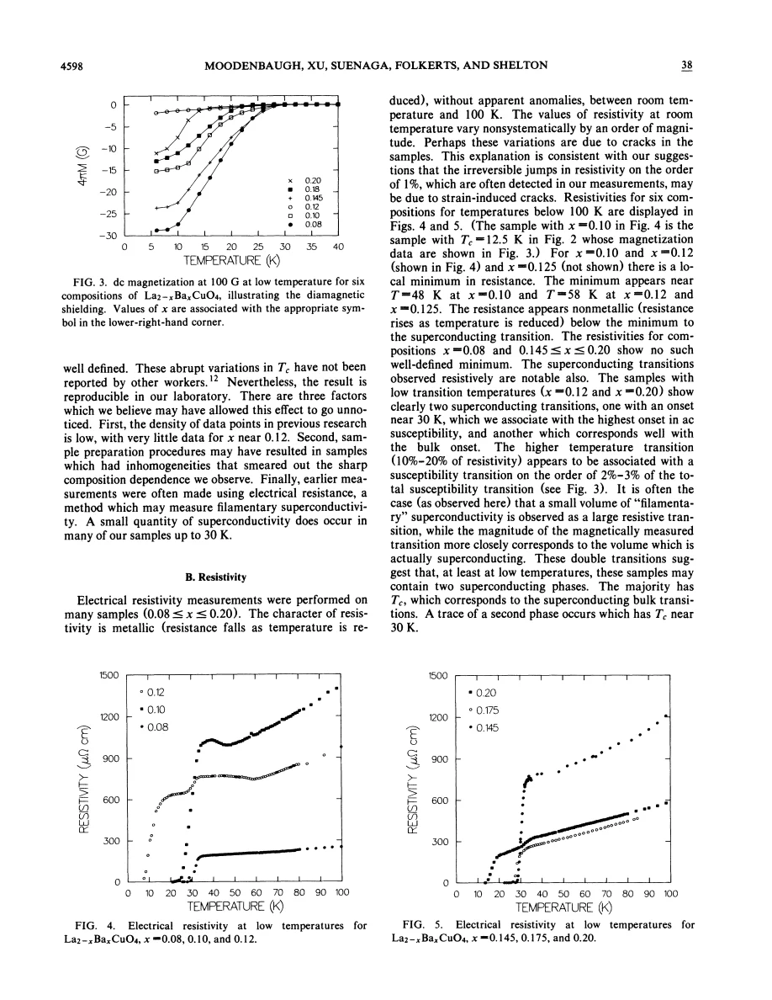
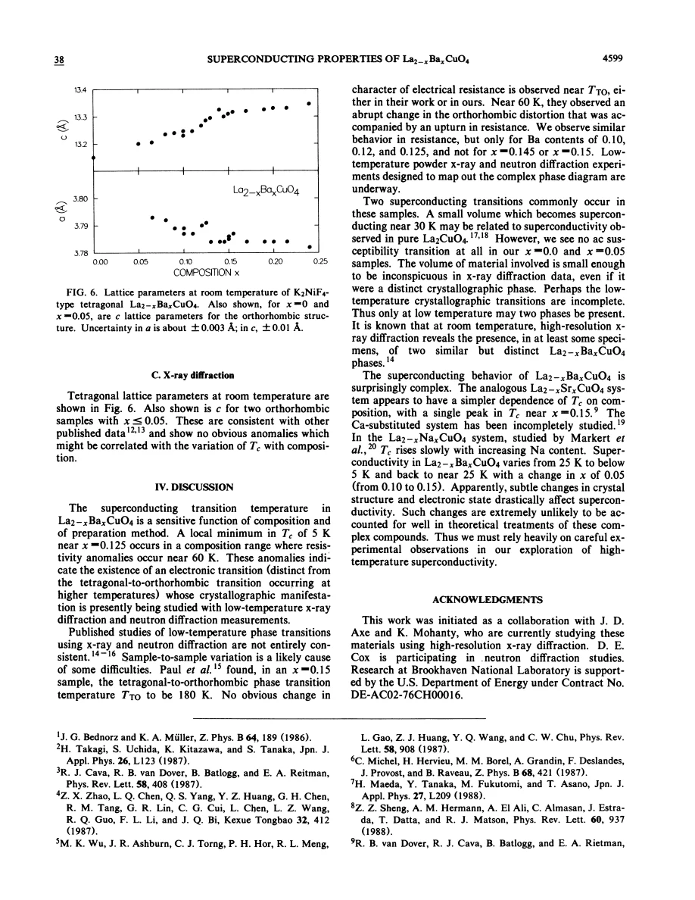

experiment · Moodenbaugh · supplied source 1988
Superconducting properties of La₂₋ₓBaₓCuO₄
Magnetic measurements reveal a deep bulk transition minimum near x ≈ 0.12 even while a small resistive onset survives near 30 K.
The question: What does a densely sampled composition series reveal about bulk versus filamentary superconductivity in LBCO?
Before you start: the few terms you need
- Mutual inductance: an ac magnetic-response measurement
- Shielding: diamagnetic response after cooling, affected by connectivity
- Filamentary superconductivity: small connected superconducting regions can strongly alter resistance
See → explain → test
Understand it in four pictures.
Picture 1 / 4
Preparation is part of the experiment
Look for: Repeated pellet firing, grinding and oxygen annealing were needed for reproducible samples.
Swipe across the picture to read every label, or enlarge it below.
- Mix powders
- Repeated pellet firings
- Oxygen anneal
- Compare compositions
Teaching workflow; source oxygen content was not determined.
Nominal composition is meaningful only together with processing history.
Picture 2 / 4
Define which transition you mean
Look for: Highest onset, bulk onset and the specified T_c criterion are different points on one susceptibility curve.
Swipe across the picture to read every label, or enlarge it below.
- Highest onset
- Bulk onset
- Defined T_c
Teaching comparison; exact criteria are stated in source Fig. 1 and text.
A faint early onset is not the bulk superconducting transition.
Check the original: PDF p. 2
Picture 3 / 4
See the one-eighth valley
Look for: Closely spaced Ba compositions uncover two maxima separated by a deep minimum.
Swipe across the picture to read every label, or enlarge it below.
- Dense x sampling
- Magnetic bulk T_c
- Minimum near x ≈ 0.12
Teaching evidence chain; no generated numerical phase boundary.
Sparse sampling or broad transitions can hide the anomaly.
Picture 4 / 4
Cross-check resistance with magnetism
Look for: A small high-temperature fraction changes resistance more than the magnetic volume response.
Swipe across the picture to read every label, or enlarge it below.
- Resistance onset
- Magnetic transition
Teaching distinction; shielding is still affected by grain geometry and connectivity.
A resistance drop and bulk diamagnetism answer different questions.
Predict before revealing
A sample shows a resistance drop near 30 K but only a tiny magnetic response until5 K. What follows?
Choose an answer, then compare the reasoning.
A connected minority fraction can change current paths strongly. Magnetic and resistive criteria must be assessed together.
Read the answer
A small connected superconducting fraction may cause the early resistance change A connected minority fraction can change current paths strongly. Magnetic and resistive criteria must be assessed together.
Go deeper Follow the full argument
Why this composition survey was decisive
Moodenbaugh and colleagues systematically prepared La₂₋ₓBaₓCuO₄ over nominal Ba concentrations from zero to 0.25. Their magnetic transition curve had two maxima around x ≈0.09–0.10 and 0.15, both near 25 K, separated by a deep minimum near x ≈0.12–0.125 where the defined transition fell to about 5 K. The surprise was not simply low T_c; it was the rapid fall and recovery within a narrow composition interval. The authors argue that previous sparse composition sampling, inhomogeneous preparation and reliance on resistance could conceal this behavior. This paper provides an experimental starting point for the later structural and stripe studies, rather than itself directly observing stripes.
Read the preparation details as evidence
The authors adjusted an LSCO preparation recipe because Ba-containing samples responded differently. They pelletized during the firings, introduced a 700–750°C air preheat, repeatedly ground and fired the material, then annealed in oxygen at 900°C before cooling. The resulting pellets were hard and well sintered, but sample-to-sample variation remained. Metal proportions are nominal starting values and oxygen content was not measured. Room-temperature diffraction generally found the principal 214 phase without impurity peaks above the stated detection level, but this does not certify microscopic uniformity or low-temperature single-phase structure. Small irreversible resistance jumps and nonsystematic absolute resistivity changes are attributed tentatively to cracks, which make absolute transport magnitudes especially fragile.
Three transition definitions on one curve
Figure 1 explains the source's terminology. The highest onset is a subjective estimate of the first deviation from the normal-state susceptibility signal, often involving only a small fraction near 25–30 K. The bulk onset is the intersection of the extrapolated steepest transition slope with the normal-state level. Their reported T_c is a specified mass-normalized signal, 200 μV per gram, equivalent to 30% of the largest transition in the series. Therefore different papers' T_c values need not be interchangeable without checking criteria. Figure 2 displays these distinctions across composition instead of concealing the onset range inside one number. dc magnetic measurements provide a separate consistency check and show reduced shielding where the bulk transition is reduced. The ac apparatus operates at 200 Hz, whereas the dc shielding comparison uses a 100 G field. Their amplitudes and criteria therefore serve different purposes. Agreement of transition trends across these measurements strengthens the anomaly, while any absolute claim about superconducting amount still needs geometry and penetration effects. The three magnetic definitions should be retained when comparing this survey with later single-crystal work.
Why transport sees an earlier transition
Several compositions show two resistance drops: an onset near 30 K and another associated with the much lower bulk magnetic transition. The higher-temperature change can occupy 10–20% of the resistance while accounting for only a few percent of the susceptibility change. A small connected superconducting volume can redirect current efficiently; a large resistance effect is therefore not a reliable volume fraction. For x ≈0.10–0.125, resistance also turns upward below a minimum around 50–60 K before superconductivity develops. These normal-state anomalies motivate a search for an electronic or structural transition. The authors discuss two possible superconducting phases, but the resistance traces alone cannot locate the phases spatially or establish their exact crystal structures.
What the original paper leaves open
The room-temperature lattice parameters change smoothly and show no anomaly comparable to the sharp variation in T_c. Consequently, a room-temperature structural check cannot resolve the relevant low-temperature physics. The discussion identifies incomplete structural transformations or two closely related phases as possible explanations and notes ongoing low-temperature diffraction work. It does not possess the later direct charge- and spin-stripe evidence. Use the paper to learn how careful preparation, composition spacing and independent probes expose a real anomaly, while keeping its microscopic explanation open. Modern ideas about pair-density waves should be connected through later sources, rather than inserted retroactively into the 1988 measurements. Its central result remains the sharp bulk composition dependence and the warning that resistive onsets can overstate superconducting volume.
Translate the mathematics Key equations and symbol meanings
T_c: susceptibility signal = 200 μV g⁻¹
Symbols: T_c: source-defined transition temperature; the signal is mass normalized in the source apparatus.
An operational criterion, not a universal thermodynamic definition. Compare published T_c values only after checking measurement and onset criteria.
Read the evidence A guided look at the original figures

Open the full original page ↗

Open the full original page ↗

Open the full original page ↗
What this paper does—and does not—establish
- Polycrystalline nominal-composition series; oxygen content not determined.
- Cracks and connectivity complicate absolute resistance and shielding.
- The microscopic explanation of the anomaly was unresolved in this1988 paper.
Explain it back.
Try answering aloud before opening the explanation.
Why did denser composition sampling help?
The bulk transition falls and recovers rapidly near one-eighth doping, so widely spaced points can miss the minimum.
Was oxygen content measured?
No. The source explicitly reports nominal metal compositions and does not determine oxygen content.
Did the study directly observe charge stripes?
No. It established the superconducting anomaly and motivated low-temperature structural studies; stripe evidence belongs to later work.
Connect the next paper.
Source version, reading coverage and preservation
Complete supplied extracted text and selected rendered figures inspected
Reviewed body pages: 1, 2, 3, 4. Reference-only page 5 inspected; referenced papers not independently reviewed.
Original file retained byte for byte. SHA-256: 5fd1b00949d4b387710c3d6b9632f7c3c16d3c124fd765d7c26cc80a273af388
Filename: PRB - Moodenbaugh - Superconducting properties of LBCO - 1988.pdf.